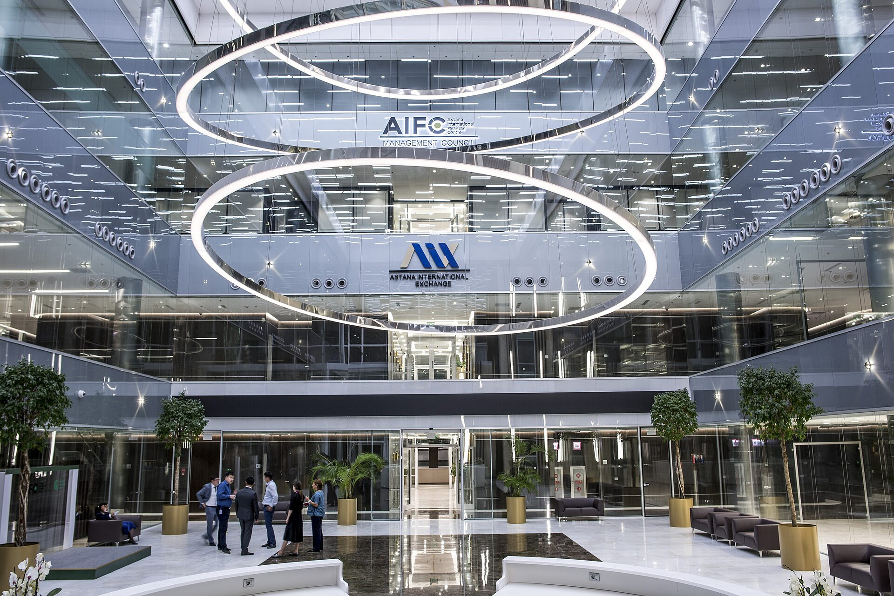

Astana Finance Days: обсуждение того, как снизить зависимость финансовой системы Казахстана от банков
На форуме, прошедшем 9 сентября на площадке МФЦА, высокопоставленные финансисты отметили необходимость углубления рынка капитала.

9 сентября 2026 года в Астане, на площадке Международного финансового центра «Астана» (МФЦА), прошёл форум Astana Finance Days. Пленарная сессия форума называлась «Innovation at Institutional Scale: Rewiring the Architecture of Finance» — то есть «Инновации институционального масштаба: перестройка архитектуры финансов».
Участвовавшие в сессии высокопоставленные представители финансовых ведомств отметили, что Казахстану необходимы более глубокие финансовые рынки и система, менее зависимая от банков.
Суть проблемы
В финансовой системе Казахстана доминируют банки: основной источник финансирования для предприятий и населения — банковский кредит. Рынок капитала (привлечение средств через акции и облигации) остаётся относительно небольшим.
Такая структура порождает два вида рисков. Во-первых, усложняется финансирование долгосрочных проектов, поскольку банки обычно работают с кратко- и среднесрочным кредитованием. Во-вторых, вся нагрузка системы ложится на один сектор — удар по банковскому сектору быстро передаётся всей экономике.
Обсуждалось, чем может помочь цифровой финанс
На пленарной сессии рассматривалось, какой вклад в углубление рынка могут внести цифровые финансовые инструменты. Среди обсуждавшихся направлений были цифровые платформы институционального уровня, токенизация активов и решения, снижающие зависимость от традиционной банковской инфраструктуры.
Что такое МФЦА
МФЦА — финансовый центр с особым правовым режимом, начавший работу в Астане в 2018 году. Он располагает отдельной судебной системой, основанной на английском общем праве, собственным регулятором и налоговыми льготами. В составе центра работает биржа Astana International Exchange (AIX).
- Дата форума: 9 сентября 2026 года
- Площадка: МФЦА, Астана
- Тема пленарной сессии: перестройка архитектуры финансов
- Основной вывод: необходимость углубления рынка капитала
Региональное сравнение
В недели, предшествовавшие Astana Finance Days, схожий шаг сделал и Узбекистан: был создан Ташкентский международный финансовый центр (TIFC), для которого предусмотрены отдельный режим на основе английского права, собственный коммерческий суд и долгосрочные налоговые льготы. 10 сентября управляющим центра была назначена Саида Мирзиёева.
Таким образом, две столицы региона обращаются к одной и той же аудитории — международным финансовым компаниям и фондам. Оба центра стремятся конкурировать, гарантируя свои льготы на долгий срок.
На что обращают внимание инвесторы
Другая тема, отмеченная участниками форума, — переход Казахстана «от транзита к капиталу». Под этой формулировкой подразумевается переход экономики страны к получению доходов за счёт финансовых услуг и инвестиций, помимо грузоперевозок и экспорта сырья.
На практике это требует нескольких условий: предсказуемости валютного режима, ясности ограничений на движение капитала, стандартов корпоративного управления и роста числа эмитентов.
Ограничения
Как сложилось доминирование банковского сектора
В большинстве постсоветских государств финансовая система развивалась с опорой на банковский сектор. У этого есть исторические причины: корпоративный сектор относительно молод, число акционерных обществ невелико, а накопительные институты — пенсионные и страховые фонды — ограничены по объёму.
В результате для рынка капитала возникает двусторонняя проблема: с одной стороны, мало эмитентов, с другой — узка база институциональных инвесторов. Эти два фактора усиливают друг друга и замедляют естественный рост рынка.
Какое решение предлагает цифровой финанс
Среди обсуждавшихся на форуме подходов особое место заняла токенизация активов. Это практика представления права на реальный актив (недвижимость, инфраструктурный проект, товарный запас) в виде цифрового токена и вывода его на торги в делимой форме.
Теоретически это снижает порог входа для мелких инвесторов и может повысить ликвидность вторичного рынка. На практике же его эффективность зависит от уровня правовой защиты, инфраструктуры хранения (custody) и стандартов отчётности.
Показатели МФЦА
МФЦА начал работу в 2018 году. В его составе действуют биржа Astana International Exchange (AIX), независимый регулятор (AFSA) и судебная система, основанная на английском общем праве.
В качестве основных задач центра указаны привлечение иностранного капитала, роль листинговой площадки при приватизации государственных предприятий и превращение в региональный центр финансовых услуг.
Конкуренция и сотрудничество с Узбекистаном
В 2026 году Узбекистан создал Ташкентский международный финансовый центр (TIFC). В нём также предусмотрены режим на основе английского права, независимый коммерческий суд и долгосрочные налоговые льготы — освобождение от ряда налогов для квалифицированных участников установлено до 2076 года.
Два центра обращаются к одной аудитории, однако их базы различаются: у Казахстана дольше опыт рынка капитала и приватизации, а у Узбекистана больше объём внутреннего рынка и численность населения.
На практике оба центра сталкиваются с одной и той же проблемой: для международных инвесторов главный критерий — не налоговая льгота, а правовая предсказуемость, свобода вывода капитала и стабильность валютного режима.
Программа форума
Astana Finance Days 2026 проходил два дня — 9 и 10 сентября. На той же неделе на площадке МФЦА состоялось ещё одно крупное мероприятие: 7 сентября совместно с South China Morning Post был организован форум «China Conference: Central Asia 2026».
Фоновые показатели экономики Казахстана
В экономике Казахстана нефтегазовый сектор составляет примерно пятую часть валового внутреннего продукта, а его доля в доходах бюджета ещё выше. Такая структура усиливает зависимость от внешней ценовой конъюнктуры.
Зависимость сохраняется и по экспортному направлению: более 80 процентов экспорта нефти идёт через Каспийский трубопроводный консорциум (КТК) на терминал в Новороссийске. В течение 2026 года погрузка несколько раз останавливалась из-за атак дронов на терминал и танкеры.
Поэтому обсуждение углубления финансового рынка связано с более широким вопросом: диверсификацией экономики за счёт несырьевых источников.
Вопросы инвесторов
В аналитических материалах о форуме отмечалось, что внимание инвесторов было сосредоточено на нескольких практических вопросах: порядке ввода и вывода капитала, конвертации валюты, стандартах корпоративного управления и механизме разрешения споров.
Судебная система МФЦА, основанная на английском общем праве, создавалась именно как ответ на последний пункт. Её практическая ценность будет оцениваться точнее по мере накопления статистики по числу рассмотренных дел и исполнению решений.
Приватизация и листинг
Один из классических путей углубления рынка капитала — вывод государственных предприятий на биржу. В Казахстане по этому направлению проведено несколько крупных размещений.
Тем же путём идёт и Узбекистан: 8 сентября был объявлен план выставить на продажу государственные активы на 8 млрд долларов; в список вошли такие объекты, как «Туронбанк», Международный бизнес-центр и «Узэкспоцентр».
Такие размещения выводят на рынок новые бумаги, однако их ликвидность будет зависеть от расширения базы инвесторов.
Большинство предложений, выдвинутых в ходе дискуссий форума, — не прямые решения, а этап обсуждения направления политики. Для оценки эффективности таких центров, как МФЦА и TIFC, потребуется статистика за несколько лет — объём привлечённого капитала, число зарегистрированных эмитентов и объём торгов.